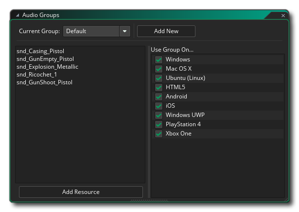

El administrador de grupos de audio está disponible desde el menú de herramientas en el IDE. Aquí puede agregar, eliminar y renombrar grupos de audio, así como establecer sus opciones de exportación de plataforma. GameMaker Studio 2 permite asignar cada uno de los recursos de audio (efectos de sonido y música) a diferentes grupos de audio para tratar de optimizar el número de sonidos que se están reproduciendo en un momento dado, así como también darle control adicional sobre qué plataformas se exportan a. Para definir un grupo de audio, debe hacer clic  en el botón Agregar nuevo, que creará un nuevo grupo que luego podrá nombrar. Para cambiar de grupo, haga clic
en el botón Agregar nuevo, que creará un nuevo grupo que luego podrá nombrar. Para cambiar de grupo, haga clic  en el menú desplegable y selecciona el que deseas editar.
en el menú desplegable y selecciona el que deseas editar.
Para agregar un sonido a un grupo de audio, debe abrir el Editor de sonido para ese sonido y luego seleccionar el grupo de la opción que encontrará allí. Una vez que haya agregado un sonido a un grupo de audio personalizado, puede usar esta ventana para elegir selectivamente a qué plataforma exportar ese sonido. Puede ser que, de forma predeterminada, tenga todos sus sonidos con la mejor calidad, pero para HTML5 (por ejemplo) quiera usar un archivo de sonido de menor calidad para usar menos memoria. En ese caso, agrega los archivos de menor calidad a GameMaker Studio 2 y luego los asigna a un nuevo grupo de audio. Luego, debe seleccionar ese grupo de audio del menú desplegable y configurarlo para exportarlo solo a HTML5, y eliminar la exportación HTML5 de las opciones de exportación de grupos de audio de mayor calidad. Es importante tener en cuenta que no puede cambiar las opciones de exportación para el grupo de audio "predeterminado" y que siempre se exportará a todas las plataformas disponibles cuando cree un paquete de juego final.
Una vez que haya definido los grupos de audio y los sonidos asignados a ellos, puede verlos en la lista de la izquierda cuando selecciona el grupo. Siempre habrá un grupo de audio "predeterminado" disponible y todos los sonidos que están dentro de este grupo siempre se incluirán en el paquete del juego para todas las plataformas y todos se cargarán en la memoria al inicio (a menos que se marque como "transmitido") en las propiedades del Editor de sonido), pero cuando crea un grupo de audio personalizado, los archivos que se agregan a él no se cargarán en la memoria hasta que llame a la función audio_group_load(). De esta forma, puede controlar qué audio reside en la memoria en cualquier momento. Tenga en cuenta también que para todas las funciones del grupo de audio, deberá proporcionar el valor de identificación del grupo de audio. Este es simplemente el nombre que le ha dado al grupo de audio.
Los grupos de audio también están vinculados a la configuración de Configuraciones. Cuando selecciona una configuración, puede abrir la ventana Grupos de audio y seleccionar los destinos de exportación desde el lado derecho para esa configuración, y luego cambiar las configuraciones cambiará estos objetivos de salida. Tenga en cuenta que no puede establecer recursos de sonido para diferentes grupos por configuración, solo el objetivo de exportación para el grupo dado.